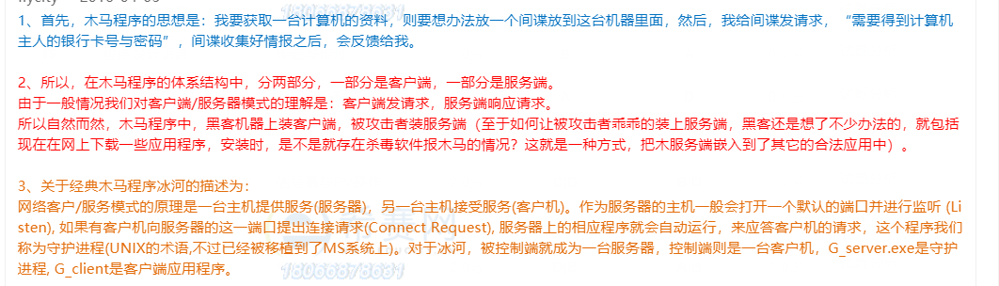

主动攻击包括拒绝服务攻击、信息篡改、资源使用、欺骗等攻击方法。
被动攻击: 主要是收集信息而不是进行访问，数据的合法用户对这种活动一点也不会觉察到。被动攻击包括截获信息、嗅探、信息收集等攻击方法。
入侵检测:对网络或计算机系统信息收集进行分析，从中发现网络是否有违反安全策略的行为和被攻击的迹象
X卧底 安装在手机上的监控软件
木马程序:客户端运行在攻击者的机器上，服务器端运行在被攻击者机器上。

网络故障:
如果DNS服务器工作不正常或者DNS服务器网络连接中断都有可能导致DNS无法解析域名。如果配置错误会导致DNS无法解析域名。
DNS负载均衡:是一种保证用户网络访问的方式。 方法有 启用循环，添加每个WEB 服务器的主机记录
中国独自指定的3G标准. TD-SCDMA
W-CDMA：宽带码分多址，支持384kps到2Mbps不等数据传输。
DOS：即拒绝服务，其目的是使计算机或网络无法提供正常的服务。最常见的DOS攻击是计算机网络宽带攻击和连通性攻击。
SYN Flooding攻击是DOS典型代表。该攻击以多个随机源主机地址向目的路由器发送SYN包，目的是造成目的路由的资源大量浪费而不能提供服务。
ARP攻击:通过伪造IP地址和MAC地址实现欺骗，伪造网关ARP报文与你通信，从而使得你的数据包无法发送到真正网关，造成网络无法跨越网段通信。
网络监听:是一种监视网络状态、数据流程以及网络信息传输的管理工具，使用网络监听可以有效截获网络上传送的数据。最有效防范方法:对传送的数据加密。


病毒:
通过感染的途径以及采用的技术区分：
- 文件型计算机病毒感染可执行文件 EXE和 COM文件
- 引导型计算机病毒就 影响软盘或硬盘的引导扇区
- 目录计算机病毒 能够修改硬盘上存储的所有文件的地址
- 宏病毒 感染对象时使用某些程序创建的文本文档、数据库、电子表格等文件；例如文件名:Macro.Mekussa